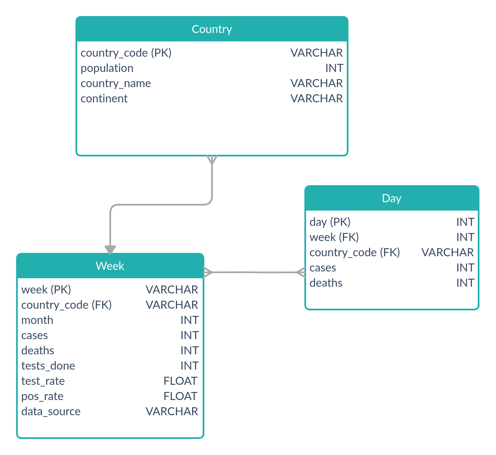

-- Obter o total de paises
drop procedure if exists count_countries;
DELIMITER //
create procedure count_countries()
begin
select count(country_code) from Country;
end //
DELIMITER ;
call count_countries;
-- Calcular os casos totais num pais
drop procedure if exists count_country_total;
DELIMITER //
create procedure count_country_total(in country varchar(45))
begin
select sum(cases) from Day where country_code = country;
end //
DELIMITER ;
call count_country_total('AT');
-- Calcular as mortes totais num pais
drop procedure if exists count_country_total_deaths;
DELIMITER //
create procedure count_country_total_deaths(in country varchar(45))
begin
select sum(deaths) from Day where country_code = country;
end //
DELIMITER ;
call count_country_total_deaths('AT');Para chegar ao resultado obtido comecei por desenhar um modelo conceptual que organiza-se os casos diariamente e semanalmente por país. Com esse modelo estruturei o lógico para definir os tipos que iria utilizar e de seguida gerei o modelo fisico com base neste último. Tendo o modelo fisico gerado e conetado à base de dados, utilizei o Table Data Import Wizard do MySQL Workbench para importar os dados dos .csv para as tabelas.